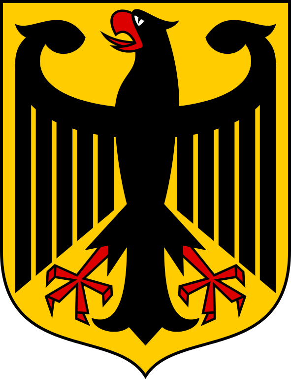
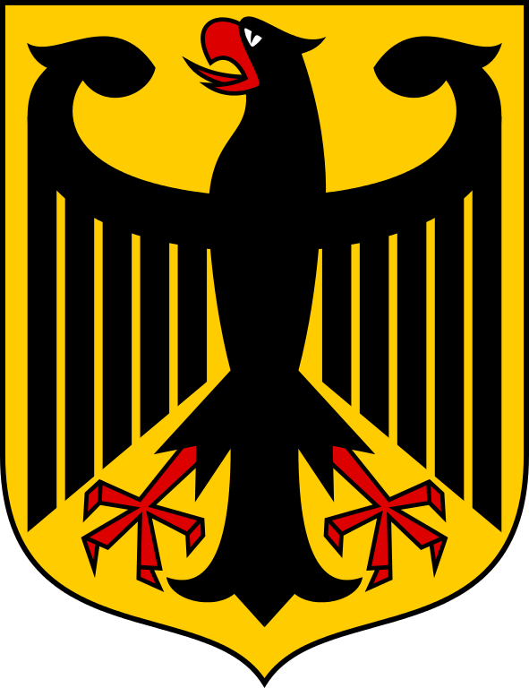

Deutschland
 

Deutschland (Vollform: Bundesrepublik Deutschland) ist ein Bundesstaat in Mitteleuropa. Er besteht seit 1990 aus 16 Ländern und ist als freiheitlich-demokratischer und sozialer Rechtsstaat verfasst. Die 1949 gegründete Bundesrepublik Deutschland stellt die jüngste Ausprägung des deutschen Nationalstaates dar. Bundeshauptstadt und Regierungssitz ist Berlin. Deutschland hat 83 Millionen Einwohner und zählt mit durchschnittlich 233 Einwohnern pro Quadratkilometer zu den dicht besiedelten Flächenstaaten.
An Deutschland grenzen neun Staaten, es hat Anteil an der Nord- und Ostsee im Norden sowie dem Bodensee und den Alpen im Süden. Es liegt in der gemäßigten Klimazone und verfügt über 16 National- und über 100 Naturparks. Die bevölkerungsreichste deutsche Stadt ist Berlin; weitere Metropolen mit mehr als einer Million Einwohnern sind Hamburg, München und Köln. Der größte Ballungsraum ist das Ruhrgebiet, Frankfurt am Main ist als deutsches Finanzzentrum international von Bedeutung. Deutschlands Bevölkerung hat mit 1,57 Kindern pro Frau (2018) eine vergleichsweise niedrige Geburtenrate, die in den 2010er-Jahren leicht anstieg.
Auf dem Gebiet des heutigen Deutschlands ist die Anwesenheit von Menschen vor 500.000 Jahren durch Funde des Homo heidelbergensis, des Neandertalers sowie einiger der ältesten Kunstwerke der Menschheit aus der späteren Altsteinzeit nachgewiesen. Während der Jungsteinzeit, um 5600 v. Chr., wanderten die ersten Bauern mitsamt Vieh und Saatgut aus dem Nahen Osten ein. Seit der Antike ist die lateinische Bezeichnung Germania für das Siedlungsgebiet der Germanen bekannt. Das ab dem 10. Jahrhundert bestehende Heilige Römische Reich, das aus vielen Herrschaftsgebieten bestand, war wie der 1815 ins Leben gerufene Deutsche Bund ein Vorläufer des späteren deutschen Nationalstaates.
Das 1871 gegründete Deutsche Reich entwickelte sich rasch vom Agrar- zum Industriestaat. Nach dem verlorenen Ersten Weltkrieg wurde 1918 die Monarchie abgeschafft und die demokratische Weimarer Republik konstituiert. Ab 1933 führte die nationalsozialistische Diktatur zu politischer und rassistischer Verfolgung und gipfelte in der Ermordung von sechs Millionen Juden auch während des 1939 begonnenen verheerenden Zweiten Weltkrieges, der 1945 mit Deutschlands Niederlage endete. Das von den Siegermächten besetzte Land wurde 1949 geteilt. Der Gründung der Bundesrepublik als demokratischer westdeutscher Teilstaat mit Westbindung am 23. Mai 1949 folgte die Gründung der sozialistischen DDR am 7. Oktober 1949 als ostdeutscher Teilstaat unter sowjetischer Hegemonie. Die innerdeutsche Grenze war nach dem Berliner Mauerbau (ab 13. August 1961) abgeriegelt. Nach der friedlichen Revolution in der DDR 1989 folgte die Lösung der deutschen Frage durch die Wiedervereinigung beider Landesteile am 3. Oktober 1990. Durch den Beitritt der fünf ostdeutschen Länder sowie die Wiedervereinigung von Ost- und West-Berlin zur heutigen Bundeshauptstadt zählt die Bundesrepublik Deutschland seit 1990 16 Bundesländer.
Deutschland ist Gründungsmitglied der Europäischen Union sowie deren bevölkerungsreichstes Land. Mit 18 anderen EU-Mitgliedstaaten bildet es eine Währungsunion, die Eurozone. Es ist Mitglied der UN, der OECD, der OSZE, der NATO, der G7, der G20 und des Europarates. Die Vereinten Nationen unterhalten seit 1951 ihren deutschen Sitz in Bonn ("UNO-Stadt"). Die Bundesrepublik Deutschland gilt als einer der politisch einflussreichsten Staaten Europas und ist ein gesuchtes Partnerland auf globaler Ebene.
Gemessen am Bruttoinlandsprodukt ist das marktwirtschaftlich organisierte Deutschland die größte Volkswirtschaft Europas und die viertgrößte der Welt. 2016 war es die drittgrößte Export- und Importnation. Aufgrund der Rohstoffarmut sowie der Automatisierung und Digitalisierung der Industrie entwickelt sich das Land, das auf die Qualität seines Bildungssystems angewiesen ist, zunehmend zur Informations- und Wissensgesellschaft. Gemäß dem Index der menschlichen Entwicklung zählt Deutschland zu den sehr hoch entwickelten Ländern.
Muttersprache der Bevölkerungsmehrheit ist die deutsche Sprache. Daneben gibt es Regional- und Minderheitensprachen und Migranten mit anderen Muttersprachen, bedeutendste Zweitsprache ist Englisch. Die Kultur Deutschlands ist vielfältig und wird neben zahlreichen Traditionen, Institutionen und Veranstaltungen beispielsweise in der Auszeichnung als UNESCO-Welterbe in Deutschland, in Kulturdenkmälern und als immaterielles Kulturerbe erfasst und gewürdigt.
Geschichte
Die ältesten Belege für die Anwesenheit der Gattung Homo auf deutschem Gebiet sind etwa 700.000 Jahre alt, von einer dauerhaften Anwesenheit zumindest im Süden geht man seit 500.000 v. Chr. aus. Nach dem Fundort in der Nähe der Stadt Heidelberg wurde der Homo heidelbergensis benannt. Die mindestens 300.000 Jahre alten Schöninger Speere sind die ältesten vollständig erhaltenen Jagdwaffen der Menschheit und haben das Bild der kulturellen und sozialen Entwicklung des frühen Menschen revolutioniert.
Auf die Neandertaler, nach einem Fundort im Neandertal, östlich von Düsseldorf, benannt, folgte vor etwa 40.000 Jahren der aus Afrika zugewanderte Homo sapiens, der anatomisch moderne Mensch. Die Neandertaler verschwanden zwar, doch ließ sich jüngst belegen, dass beide gemeinsame Nachkommen hatten. Die jungpaläolithische Kleinkunst ist die älteste bekannte Kunst der Menschheit.
Aus dem Nahen Osten kommende jungsteinzeitliche Bauern, die mit ihrem Vieh und ihren Kulturpflanzen über Anatolien und den Balkan zuwanderten (Linearbandkeramiker), verdrängten ab etwa 5700/5600 v. Chr. die Jäger und Sammler der Mittelsteinzeit aus der Südhälfte Deutschlands. Erst um 4000 v. Chr. wurden die aneignenden Kulturen der Jäger, Sammler und Fischer auch in Norddeutschland von bäuerlichen, nun durchgehend sesshaften Kulturen abgelöst; als letzte Kultur der Jäger in Norddeutschland gilt die Ertebølle-Kultur.
Mit über 1000 Jahren Verzögerung begann auf deutschem Gebiet die Bronzezeit um 2200 v. Chr. Zu ihren bedeutendsten Funden zählt die Himmelsscheibe von Nebra. Mit Beginn der Hallstattzeit (1200-1000 v. Chr.) waren Süd- und Mitteldeutschland von Kelten besiedelt, als bedeutendstes Metall begann sich das Eisen durchzusetzen. Um 600 v. Chr. kam es in Norddeutschland zur Herausbildung der Jastorf-Kultur, die als germanische Kultur angesehen wird. "Germanen" wurden im 1. Jahrhundert v. Chr. von antiken Autoren erstmals erwähnt und bezeichneten als ethnographischer Sammelbegriff kein einheitliches Volk.[84]
Von 58 v. Chr. bis etwa 455 n. Chr. gehörten die Gebiete links des Rheins und südlich der Donau zum Römischen Reich, von etwa 80 bis 260 n. Chr. auch ein Teil Hessens sowie der größte Teil des heutigen Baden-Württemberg südlich des Limes. Diese römischen Gebiete verteilten sich auf die Provinzen Gallia Belgica, Germania superior, Germania inferior, Raetia und Noricum. Dort gründeten die Römer Legionslager, eine Reihe von Städten wie Trier, Köln, Augsburg und Mainz - die ältesten Städte Deutschlands. Verbündete germanische Stämme sicherten diese Provinzen, zudem wurden Siedler aus anderen Reichsteilen hier sesshaft.
Der außerhalb der römischen Provinzen Germania Inferior und Germania Superior liegende Teil des Siedlungsgebiets der Germanen wurde von den Römern in der römischen Kaiserzeit als Germania Magna bezeichnet.[85]
Versuche, den Einflussbereich weiter in dieses germanisches Gebiet auszuweiten, scheiterten mit der Varusschlacht im Jahr 9 n. Chr. Die Bemühungen der Römer zur Errichtung von Provinzen bis zur Elbe endeten schließlich. Tacitu's im Jahr 98 entstandene Schrift Germania ist die älteste Beschreibung der germanischen Stämme.
Nach dem Einfall der Hunnen 375 setzte die Völkerwanderung ein, gleichzeitig bildeten sich im übergang von der Spätantike zum Frühmittelalter mehrere Großstämme heraus, nämlich die der Franken und Alamannen, Sachsen, Bayern und Thüringer. Im Zuge des Untergangs Westroms kam es zur Bildung germanisch-romanischer Nachfolgereiche. In die weitgehend entvölkerten Gebiete des heutigen Ostdeutschlands wanderten im 7. Jahrhundert slawische Stämme ein. Erst im Zuge der hochmittelalterlichen Ostsiedlung wurden sie assimiliert. West- und Mitteleuropa wurde vom Ende des 5. Jahrhunderts entstandenen Frankenreich dominiert, das heutige Norddeutschland von den Sachsen und Slawen. Alle heute zu Deutschland gehörigen Gebiete des Frankenreichs lagen im östlichen Teilreich Austrien.
Mitte des 8. Jahrhunderts trat im Frankenreich Pippin der Jüngere aus der Dynastie der Karolinger die Königsnachfolge der Merowinger an. Nach der Unterwerfung und Zwangsmissionierung der Sachsen und Eroberungen in Italien, Nordspanien und im östlichen Grenzraum unter Karl dem Großen wurde das Vielvölkerreich neu organisiert. Kirchenorganisation und Kulturförderung knüpften partiell an römische Traditionen an (Karolingische Renaissance). Zu Weihnachten 800 ließ sich Karl vom Papst in Rom zum Kaiser krönen und erhob damit Anspruch auf die Nachfolge des Römischen Reiches (Translatio imperii), was zur Konkurrenz mit den byzantinischen Kaisern führte (Zweikaiserproblem). Nach Karls Tod 814 kam es zu Kämpfen unter seinen Nachkommen, die 843 im Vertrag von Verdun zur Dreiteilung des Reiches in das Ostfrankenreich unter "Ludwig dem Deutschen", das Westfrankenreich und Lotharingien führten.
Im ostfränkischen Reich bildeten sich um 900 fünf große Herzogtümer heraus, nämlich die Stammesherzogtümer Sachsen, Baiern, Schwaben, Franken und Lothringen. Im 10. Jahrhundert starb die karolingische Dynastie in West- wie auch in Ostfranken aus, beide Reichsteile blieben politisch fortan getrennt. Die Schlacht auf dem Lechfeld beendete 955 jahrzehntelange Ungarneinfälle, führte zu einem Prestigegewinn König Ottos, der 962 in Rom zum Kaiser gekrönt wurde, und zur Zuordnung des Erzengels Michael als Schutzpatron der Deutschen.
Die Dynastie der Ottonen war für die Ausformung des Ostfrankenreichs wesentlich, sie gilt aber nicht mehr als Beginn der eigentlichen "deutschen" Reichsgeschichte. Der damit verbundene Prozess zog sich vielmehr mindestens bis ins 11. Jahrhundert hin.[86] Der Begriff regnum Teutonicorum ("Königreich der Deutschen") findet sich erstmals zu Beginn des 11. Jahrhunderts in den Quellen, er war aber nie Titel des Reiches (Imperium), sondern diente den Päpsten zur Relativierung des Herrschaftsanspruchs der römisch-deutschen Könige.[87]
Die 951 von Otto I. angenommene langobardische Königswürde verband das Regnum Teutonicum mit Reichsitalien. 962 wurde Otto zum Kaiser gekrönt und vereinte damit die römisch-deutsche Königswürde mit dem Anspruch auf das westliche "römische" Kaisertum (Reichsidee). Dieses römisch-deutsche Reich nahm unter den Ottonen eine hegemoniale Stellung im westlichen Europa ein. 1024 traten die Salier die Königsnachfolge an, die bis zum Ende des Mittelalters stets an eine Wahl durch verschiedene Große des Reichs gekoppelt war. Die Verzahnung weltlicher und geistlicher Macht durch das Reichskirchensystem führte zum Investiturstreit mit dem reformierten Papsttum, zum Gang nach Canossa 1077 und zur Zwischenlösung des Wormser Konkordats 1122. Einen Höhepunkt erreichte die Auseinandersetzung zwischen Kaiser und Papst in staufischer Zeit, insbesondere unter Friedrich II., der im deutschen Reichsteil viele Regalien aufgab. Mit seinem Tod 1250 brach die staufische Königsherrschaft zusammen; das folgende Interregnum vergrößerte die Macht der Fürsten. Das Kaisertum bestand als politischer Ordnungsfaktor fort, verlor aber auf europäischer Ebene zunehmend an Einflussmöglichkeiten.
In Form der Territorialstaaten verselbstständigten sich zahlreiche Feudalherrschaften zu Lasten der königlich-kaiserlichen Macht, die aber nie stark ausgeprägt gewesen und deshalb auf konsensuale Herrschaft mit den Großen des Reiches angewiesen war. Kaiser Heinrich VI. war Ende des 12. Jahrhunderts mit dem Versuch gescheitert, durch den Erbreichsplan die Erbmonarchie einzuführen. Während sich das Westfrankenreich zum französischen Zentralstaat entwickelte, blieb das ostfränkische oder römisch-deutsche Reich durch Landesherren und das Recht der Königswahl geprägt. Mitte des 13. Jahrhunderts setzte sich im Heiligen Römischen Reich - die Bezeichnung Sacrum Imperium (Heiliges Reich) wurde bereits 1157 gebraucht, Sacrum Imperium Romanum (Heiliges Römisches Reich) erstmals gesichert 1254 - die Auffassung durch, dass einem Kollegium von Kurfürsten die Wahl des Königs zustehe, was durch die Goldene Bulle 1356 verbindlich festgeschrieben wurde. Bis zum Ende des Reiches 1806 blieb das Reich somit formal eine Wahlmonarchie. Obwohl die Kaiser wiederholt versuchten, ihre Position zu stärken, blieb das Reich ein supranationaler Verband vieler verschieden großer Territorien sowie Reichsstädte.
Das spätmittelalterliche 14. und 15. Jahrhundert war vom Wahlkönigtum geprägt: Drei große Familien - die Habsburger, die Luxemburger und die Wittelsbacher - verfügten über den größten Einfluss im Reich und über die größte Hausmacht. Als bedeutendster König gilt Karl IV., der eine geschickte Hausmachtpolitik betrieb. Trotz Krisen wie der Pest (Schwarzer Tod), der Agrarkrise und des abendländischen Schismas florierten die Städte und der Handel; es begann der übergang in die Renaissance. Im Reich traten die Habsburger das Erbe der Luxemburger an, die 1437 in männlicher Linie ausstarben, und stellten bis zum Ende des Reichs fast kontinuierlich die römisch-deutschen Herrscher. Durch geschickte Politik sicherten sich die Habsburger zusätzliche Territorien im Reich und sogar die spanische Königskrone: Habsburg stieg damit zur europäischen Großmacht auf.
An der Wende zum 16. Jahrhundert scheiterte der Versuch weitgehend, durch eine umfassende Reichsreform frühneuzeitliche staatliche Strukturen herzustellen. Ab 1519 verfolgte Kaiser Karl V., zugleich spanischer König mit überseeischem Kolonialreich, das Konzept einer Universalmonarchie. Seine Vorherrschaft in Europa begründete den jahrhundertelangen habsburgisch-französischen Gegensatz. 1517 stieß Martin Luther durch Forderungen nach innerkirchlichen und theologischen Reformen und eine anti-päpstliche Haltung die Reformation an, was zur Herausbildung "protestantischer" Konfessionen führte. Der Katholizismus reagierte mit der Gegenreformation, doch behauptete sich die evangelische Kirche in weiten Teilen des Reiches. Der Augsburger Religionsfrieden 1555 schaffte einen vorläufigen Ausgleich; Landesherren bestimmten die Konfession ihrer Untertanen (Cuius regio, eius religio). Konfessionelle und machtpolitische Gegensätze lösten den Dreißigjährigen Krieg (1618-1648) mit vielen Todesopfern und verheerten Landschaften aus, beendet durch den Westfälischen Frieden, der dem Kaiser eine geschwächte, eher auf die Repräsentation des Reichs beschränkte Stellung zuwies (siehe Jüngster Reichsabschied). Die Reichsfürsten gingen gestärkt aus diesem Konflikt hervor; sie konnten mit auswärtigen Mächten Verträge abschließen. Das Reich wurde dadurch de facto zu einem Staatenbund, de jure blieb es ein monarchisch geführtes und ständisch geprägtes Herrschaftsgebilde. Ab 1663 erörterten Kaiser und Reichsfürsten ihre politischen Angelegenheiten durch Gesandte permanent (Immerwährender Reichstag).
Im Rahmen seiner Reunionspolitik führte Ludwig XIV. den Pfälzischen Erbfolgekrieg. Frankreich wirkte als Vorbild des Absolutismus, der im Reich nicht die königliche Zentralgewalt, sondern einzelne Fürstentümer zu bürokratisch organisierten Staaten werden ließ. Manche Herrscher, insbesondere Friedrich II. von Preußen, öffneten sich dem philosophischen Zeitgeist und führten Reformen durch (Aufgeklärter Absolutismus). Der politische Aufstieg Preußens im 18. Jahrhundert führte zum Dualismus mit dem Hause Habsburg. Nach der Französischen Revolution besetzten deren Truppen das linke Rheinufer. Nach dem Sieg Napoleon Bonapartes im Zweiten Koalitionskrieg kam es 1803 zum Reichsdeputationshauptschluss. 1806 legte der letzte Kaiser Franz II. die Krone nieder, womit das Reich erlosch.
Unter Napoleons Einfluss war zwischen 1801 und 1806 die Anzahl der Staaten im Gebiet des "Alten Reiches" von etwa 300 auf etwa 60 verringert worden. Frankreich annektierte den deutschen Westen und Nordwesten und schuf deutsche Vasallenstaaten, deren Throne Napoleon mit Familienangehörigen besetzte (Großherzogtum Berg, Königreich Westphalen, Großherzogtum Frankfurt). Einige deutsche Staaten baute Napoleon zu Bündnispartnern auf, vor allem das 1805 im Frieden von Pressburg neugeschaffene Königreich Bayern, Württemberg und Baden, indem er sie um die Gebiete der säkularisierten und mediatisierten Kleinstaaten erweiterte und in dem mit Frankreich verbündeten Rheinbund vereinigte. Dieser folgte mit den von Napoleon besiegten Gegnern Preußen und österreich dem dadurch dreigeteilten, als Machtfaktor ausgeschalteten Heiligen Römischen Reich nach. Die "Franzosenzeit" brachte den Rheinbundstaaten erhebliche Modernisierungsanstöße, unter anderem bürgerliche Freiheiten, durch die Einführung des Zivilrechtsbuchs Code Napoléon. Auch in Preußen wurden ab 1806 tiefgreifende Reformen unternommen, um aus Untertanen Staatsbürger und den Staat wieder handlungs- und wehrfähig zu machen.
Ab 1809 regte sich Widerstand gegen französische Besatzung und Herrschaft; diverse Aufstände, etwa von Andreas Hofer in Tirol und Ferdinand von Schill in Preußen, wurden zunächst niedergeschlagen. Nach Napoleons Niederlage im Russlandfeldzug 1812 begannen Preußen und österreich im Bündnis mit dem Russischen Reich die Befreiungskriege (1813-1815), die das deutsche Nationalgefühl stärkten, zunächst unter protestantischen Akademikern, etwa im Lützower Freikorps, das auch als Ursprung der Farben Schwarz-Rot-Gold gilt. Die meisten Rheinbundstaaten schlossen sich den Verbündeten an, die nach dem Sieg bei der Leipziger Völkerschlacht 1813 Napoleon bis 1815 endgültig besiegten.
Anschließend restaurierte der Wiener Kongress (1814-1815) weitgehend die monarchische Herrschaft. Im Deutschen Bund, einem von österreich und Preußen dominierten Staatenbund, organisierten sich 38 Staaten (→ Drittes Deutschland) mit dem Frankfurter Bundestag als Entscheidungsgremium. 1833/1834 wurde der Deutsche Zollverein unter preußischer Vormacht geschaffen. Im Vormärz unterdrückte die alte Herrschaftselite das wirtschaftlich erstarkende Bürgertum (Demagogenverfolgung), das weiter politische Teilhabe und die Bildung eines Nationalstaats forderte, so 1817 beim studentischen Wartburgfest und 1832 beim Hambacher Fest mit dem Hissen von Schwarz-Rot-Gold, den späteren Nationalfarben.
Mit der bürgerlichen Märzrevolution 1848 mussten viele konservative Politiker abtreten, unter ihnen der epochenprägende österreichische Staatskanzler Fürst Metternich. Unter dem Revolutionsdruck in Berlin akzeptierte der preußische König Friedrich Wilhelm IV. die Einrichtung der Frankfurter Nationalversammlung. Deren Paulskirchenverfassung, die einen deutschen Nationalstaat als "Deutsches Reich" mit konstitutioneller Monarchie geschaffen hätte, lehnte er jedoch ebenso ab wie die ihm angetragene Kaiserkrone, die er als bürgerliche "Lumpenkrone" bezeichnete. Nach Niederschlagung des Maiaufstands endete die Revolution am 23. Juli 1849 mit der Einnahme der Festung Rastatt durch preußische Truppen. Das Scheitern der demokratischen Bewegung führte zu Flucht und Auswanderung der Forty-Eighters und zu einer Reaktionsära in den deutschen Staaten.
Bald danach brach der Konflikt Preußens mit österreich um die Vormacht im Deutschen Bund auf (deutscher Dualismus), der in Preußens Sieg im Deutschen Krieg 1866 endete. Der Deutsche Bund wurde aufgelöst, Preußen annektierte etliche Gebiete nord- und mitteldeutscher Kriegsgegner. 1866 wurde unter Vorherrschaft Preußens der Norddeutsche Bund zunächst als Militärbündnis gegründet. Seine Verfassung von 1867 machte ihn zum souveränen Bundesstaat und leitete die kleindeutsche Lösung ein - also die Bildung eines deutschen Gesamtstaats ohne österreich.
Das Deutsche Reich als erster deutscher Nationalstaat wurde im Deutsch-Französischen Krieg am 18. Januar 1871 gegründet, indem der preußische König Wilhelm I. in Versailles zum ersten Deutschen Kaiser ausgerufen wurde. Hierbei wurden insbesondere die süddeutschen Staaten eingegliedert.
Otto von Bismarck hatte als preußischer Ministerpräsident die Reichsgründung betrieben und wurde erster Reichskanzler. Die Bismarcksche Reichsverfassung stützte die Macht der konstitutionellen Monarchie, war aber auch auf Modernisierung ausgelegt und ambivalent; Gesetze zur Schule und Zivilehe waren teils liberal. Für den Reichstag galt ein allgemeines Wahlrecht (für Männer). Gegen die katholische Kirche führte Bismarck den Kulturkampf, gegen die Sozialdemokratie erließ er ab 1878 die Sozialistengesetze und versuchte, die Arbeiter durch eine Sozialgesetzgebung an den Staat zu binden. Die Hochindustrialisierung in Deutschland sorgte für Wirtschafts- und Bevölkerungswachstum, Landflucht und eine breite Steigerung des Lebensstandards; Deutschland stieg zur größten Volkswirtschaft Europas auf.
Die Bündnispolitik Otto von Bismarcks zielte auf die Isolierung Frankreichs mit Deutschland als halbhegemonialer Macht in der Mitte Europas. Nachdem deutsche Kaufleute und Vereine private Kolonialpolitik betrieben hatten, nahm das Reich infolge der Berliner Kongokonferenz 1884 trotz Bismarcks Skepsis am Wettlauf um Afrika teil. Deutsche Kolonien wurden von Bismarck als "Schutzgebiete" bezeichnet. Im "Dreikaiserjahr" 1888 kam Wilhelm II. an die Macht, forderte für das wirtschaftlich und militärisch aufgestiegene Deutsche Reich die Anerkennung der bisherigen Großmächte ("Platz an der Sonne") und bemühte sich um Kolonienerwerb und Flottenaufbau im Imperialismus. Das herausgeforderte England schloss daraufhin in einem neuen Bündnissystem (Triple Entente) statt Frankreich nun Deutschland aus. Diese Spannungen lösten 1914 den Ersten Weltkrieg aus, einen verlustreichen Mehrfrontenkrieg; mehr als zwei Millionen deutsche Soldaten starben, rund 800.000 Zivilisten verhungerten.
Mit der Novemberrevolution und der Ausrufung der Republik am 9. November 1918 endete das Deutsche Kaiserreich, das mit seiner Kapitulation die Niederlage im Ersten Weltkrieg einräumte. Nach der Wahl der verfassunggebenden Nationalversammlung - bei der erstmals Frauen aktiv und passiv wahlberechtigt waren - trat die Weimarer Verfassung am 14. August 1919 in Kraft. Im Friedensvertrag von Versailles wurden erhebliche Gebietsabtretungen, die Alliierte Rheinlandbesetzung und Reparationen auf Grundlage einer festgeschriebenen deutschen Alleinschuld am Krieg bestimmt. Diese Ausgangslage belastete das politische Klima; Rechtsextreme verbreiteten die Dolchstoßlegende gegen die "Novemberverbrecher", was zu politischen Morden und Putschversuchen führte (Kapp-Putsch 1920 und Hitlerputsch 1923). Auch kommunistische Aufstände wie der Ruhraufstand 1920, die Märzkämpfe in Mitteldeutschland 1921 und der Hamburger Aufstand 1923 sorgten für Instabilität. Unzureichende Reparationsleistungen nahmen Belgien und Frankreich zum Anlass der Ruhrbesetzung von 1923 bis 1925.
In den kurzen "goldenen Zwanzigern" blühte die Kultur und ab 1924 auch die Konjunktur. Berlin war mit über vier Millionen Einwohnern die drittgrößte und eine der dynamischsten Städte der Welt. Die Prosperität endete 1929 mit der Weltwirtschaftskrise, auf deren Höhepunkt 1932 es in Deutschland mehr als sechs Millionen Arbeitslose gab, die größtenteils in Elend lebten. Radikale Parteien fanden starken Zulauf, sodass es für die gemäßigten Parteien zunehmend schwieriger wurde, stabile Regierungen zu bilden. Nach dem Erdrutschsieg der Nationalsozialisten bei der Reichstagswahl 1930 verfügten die in rascher Folge wechselnden Reichskanzler über keine parlamentarische Mehrheit mehr; ihre Präsidialkabinette waren vom Reichspräsidenten Paul von Hindenburg und dessen Notverordnungen abhängig. Die Deflationspolitik des Reichskanzlers Heinrich Brüning verschärfte die wirtschaftliche Krise. Dessen Nachfolger Franz von Papen (Juni-November 1932) unterstellte die demokratische Regierung Preußens einem Reichskommissar (Preußenschlag) und ließ Neuwahlen abhalten, bei denen die Nationalsozialisten noch stärker wurden.
Reichskanzler Kurt von Schleicher versuchte durch eine "Querfront" von Gewerkschaften und Teilen der Nationalsozialisten eine Machtübernahme Adolf Hitlers zu verhindern, von Papen aber überredete den widerwilligen Hindenburg, Hitler am 30. Januar 1933 zum Reichskanzler zu ernennen. Am 27. Februar kam es zum - bis heute unaufgeklärten - Reichstagsbrand, den Hitler zur "Reichstagsbrandverordnung" nutzte, mit der auf unbestimmte Zeit die Grundrechte außer Kraft gesetzt wurden. Die folgenden Massenverhaftungen politischer Gegner, insbesondere von Kommunisten und Sozialdemokraten, prägten die Reichstagswahl 1933, bei der die NSDAP die absolute Mehrheit knapp verfehlte und mit der reaktionären DNVP weiterregierte. Die endgültige Machtübernahme erfolgte fünf Tage später, als der Reichstag mit den Stimmen der bürgerlichen Parteien, allein gegen die Stimmen der SPD, das Ermächtigungsgesetz verabschiedete und damit Hitlers Regierung auch die Gesetzgebung überließ.
Die NSDAP errichtete im Deutschen Reich innerhalb kürzester Zeit einen totalitären Einparteienstaat unter Führung Adolf Hitlers und der Gleichschaltung des Staatsapparats. Missliebige Personen und politische Gegner, insbesondere Kommunisten, Sozialdemokraten und Gewerkschafter, wurden aus allen Behörden entfernt, erste Konzentrationslager wurden errichtet, Bücher verbrannt[88] und missliebige Kunst als "entartet" diffamiert. NS-Propaganda durchdrang auch das Privatleben; bereits auf Kinder wurde Druck ausgeübt, den Parteiorganisationen beizutreten. Im Oktober 1933 verkündete Hitler den Austritt Deutschlands aus dem Völkerbund. Er sicherte seine Herrschaft im Inneren, indem er auch innerparteiliche Gegner und ehemalige Weggefährten ermorden ließ, insbesondere während der Röhm-Morde am 30. Juni 1934, als die SA zugunsten der ihm bedingungslos ergebenen SS entmachtet wurde. Die Generalität der Reichswehr legte auf ihn persönlich den Führereid ab. Die Gestapo wurde als politische Polizei zur Bekämpfung der politischen und ideologischen Gegner eingesetzt.
Von Beginn an hatte Hitler zwei Ziele, einen Angriffs- und Vernichtungskrieg zur Schaffung von "Lebensraum im Osten" und die Verfolgung der Juden, die mit Diskriminierung, Demütigung und Ausgrenzung begann und als "Endlösung der Judenfrage" im Holocaust endete. 1934 begann die Aufrüstung der Wehrmacht. Eine enthemmt expansive Geldpolitik und Schuldenwirtschaft waren auf baldige Kriegsführung ausgerichtet. Mit dem Reinhardt-Programm wurde die Arbeitslosigkeit gesenkt; dies wurde von der Bevölkerung als Einlösung wirtschaftlicher Versprechen begrüßt. Die deutschen Juden wurden immer schlechter gestellt; die Nürnberger Gesetze 1935 bestraften Beziehungen zwischen "Ariern" und Juden als "Rassenschande" schwer. Juden verloren alle öffentlichen ämter, wurden willkürlich verfolgt, bestohlen und erpresst und schließlich mit einem völligen Berufsverbot belegt, alle jüdischen Unternehmen wurden enteignet (Arisierung). Immer häufiger wurden auch Juden in Konzentrationslager eingewiesen. Viele fassten den Entschluss zur Emigration, die meisten aber blieben in Deutschland.
Die rassistische NS-Ideologie zur Schaffung einer "gesunden" "Volksgemeinschaft" (vgl. Herrenrasse) richtete sich gegen zwei weitere Gruppen, Roma und Slawen als "Untermenschen". Nicht als "fremdrassig", aber als die "Gesundheit" des "Volkskörpers" bedrohend, drangsalierten und ermordeten sie auch Homosexuelle, Behinderte und "Asoziale". Zugleich feierte das Regime Propagandaerfolge; 1936 verbesserten die Olympischen Spiele das Ansehen im Ausland, das entmilitarisierte Rheinland wurde besetzt. Die Expansion begann mit dem "Anschluss" österreichs im März 1938, woraufhin Deutschland als "Großdeutsches Reich" bezeichnet wurde, der Annexion des Sudetenlandes im Oktober 1938 und der "Zerschlagung der Rest-Tschechei" im März 1939, was die bisherige Appeasement-Politik des westlichen Europa gegenüber Hitler als Fehler offenbarte.
Nachdem das Deutsche Reich am 1. September 1939 den überfall auf Polen begonnen hatte, erklärten Großbritannien und Frankreich Deutschland den Krieg. Der Zweite Weltkrieg forderte in sechs Jahren etwa 55 bis 60 Millionen Tote. Deutschland gelangen zunächst einige als "Blitzkrieg" bezeichnete militärische Erfolge. Polen wurde im Nichtangriffspakt zwischen Hitler und Stalin aufgeteilt, die Wehrmacht warf anschließend ihre Armeen nach Westen, überfiel im Westfeldzug die neutralen Staaten Luxemburg, Belgien und Niederlande und besetzte 1940 innerhalb von sechs Wochen Frankreich. Hitlers Popularität erreichte ihren Höhepunkt.
Im Kriegsverlauf verschlechterte sich auch die Lage der Juden. Ihre Ausreise wurde verboten und viele starben wegen unzureichender Versorgung und Seuchen bei der Zwangsarbeit. Ab 1941 mussten sie den "Judenstern" tragen und im gesamten deutschen Machtbereich begann ihre systematische Ermordung. Die mit der Ausführung vor allem beauftragte SS errichtete auf ehemals polnischem oder sowjetischem Gebiet Vernichtungslager, in denen die meisten Opfer, in Viehwaggons herangebracht, sofort vergast wurden (siehe Aktion Reinhardt). Allein in den Gaskammern und Krematorien der Konzentrationslager Auschwitz wurden über eine Million Menschen ermordet. Insgesamt beläuft sich die Zahl der ermordeten Juden auf 6,3 Millionen.
Mit dem Unternehmen Barbarossa begann am 22. Juni 1941 der (Russlandfeldzug 1941-1945). Das deutsche Heer marschierte auf Moskau vor und wurde in der Schlacht um Moskau im Dezember 1941 gestoppt. Nachdem der Kriegsverbündete Japan im selben Monat die amerikanische Marine im Angriff auf Pearl Harbor überfallen hatte, erklärte Deutschland auch den Vereinigten Staaten den Krieg. Mangelnde Ressourcen und die übermacht des Gegners ließen bald die Kriegswende eintreten, die sich in der verlorenen Schlacht von Stalingrad mit der völligen Aufreibung der deutschen 6. Armee manifestierte. Je unvermeidlicher die Niederlage wurde, desto härter wurde die Politik nach innen geführt. In seiner Sportpalastrede vom 18. Februar 1943 proklamierte Joseph Goebbels den "totalen Krieg", während die deutschen Armeen an fast allen Fronten zurückwichen und zahlreiche deutsche Städte durch den Bombenkrieg zerstört wurden. Als sowjetische Armeen in der Schlacht um Berlin die Hauptstadt schon eingenommen hatten, nahm sich Hitler am 30. April 1945 im Führerbunker das Leben. Die bedingungslose Kapitulation der Wehrmacht folgte am 8. Mai, die letzte Reichsregierung wurde in Flensburg-Mürwik am 23. Mai 1945 verhaftet. Die überlebenden politischen und militärischen Hauptverantwortlichen wurden in den Nürnberger Prozessen verurteilt.
Deutschland wurde in den Grenzen vom 31. Dezember 1937 aufgeteilt; am 5. Juni 1945 legten die vier Siegermächte - USA, UdSSR, Großbritannien und schließlich auch Frankreich - Besatzungszonen fest und übten sodann westlich der Oder-Neiße-Linie die Hoheitsgewalt in ihrer jeweiligen Zone und gemeinsam mittels einer Alliierten Kommandantur über Groß-Berlin aus. Die deutschen Ostgebiete, ein Viertel der Reichsfläche, wurden durch das Potsdamer Abkommen ausgegliedert und auf Betreiben Stalins großenteils unter polnische und im nördlichen Ostpreußen unter sowjetische Verwaltung gestellt (Oblast Kaliningrad). Die Westmächte billigten dieses Vorgehen widerstrebend; die meisten deutschen Bewohner dieser Gebiete wurden vertrieben, ein Fünftel der früheren Reichsbevölkerung. Die Republik österreich wurde in den Grenzen von 1938 wiederhergestellt und ebenfalls in vier Besatzungszonen aufgeteilt. 1946/1947 wurde das Saarland aus dem Besatzungsgebiet ausgegliedert und unter direkte französische Verwaltung gestellt.
Die Vier Mächte bemühten sich anfangs noch um eine gemeinsame Besatzungspolitik. Einig war man sich über eine Demilitarisierung und die sogenannte Entnazifizierung; schon bei der Frage, was unter Demokratie zu verstehen sei, zeigten sich Differenzen zwischen der Sowjetunion und den Westmächten, die sich im beginnenden Kalten Krieg verschärften. In den drei Westzonen stellten die Westalliierten die für den Wiederaufbau bedeutende Montanindustrie unter das Ruhrstatut. Mit der Währungsreform im Juni 1948 und der zeitgleichen Aufhebung der Preisbindung und Bewirtschaftung setzte der Wirtschaftsdirektor der Westzonen Ludwig Erhard eine vor allem psychologisch bedeutsame wirtschaftliche Zäsur; mit der wenige Tage später folgenden Währungsreform in der sowjetisch besetzten Zone Deutschlands und der Berlin-Blockade durch die UdSSR vertiefte sich die Trennung zwischen Ost und West.
Die Bundesrepublik Deutschland wurde am 23. Mai 1949 in den drei westlichen Besatzungszonen gegründet und das Grundgesetz als provisorische Verfassung in Kraft gesetzt, dessen Präambel für eine übergangszeit ein Wiedervereinigungsgebot enthielt; Bonn wurde Regierungssitz. In der sowjetischen Besatzungszone wurde am 7. Oktober 1949 die Deutsche Demokratische Republik (DDR) gegründet. Beide Teilstaaten sahen sich jeweils in Kontinuität eines gesamtdeutschen Staates und erkannten den jeweils anderen nicht an.[89] Beide blieben unter Kontrolle der Besatzungsmächte. Mit der Integration in die entgegengesetzten Militärbündnisse von NATO und Warschauer Vertrag erhielten sie 1955 ihre formale Unabhängigkeit (siehe Pariser Verträge, Souveränitätserklärung der UdSSR für die DDR). Voraussetzung dafür war, dass im Juli 1951 die drei Westmächte die formelle Beendigung des Kriegszustandes mit Deutschland beschlossen; die Sowjetunion erklärte dies erst im Januar 1955, wobei weitere Staaten im östlichen Europa folgten.[90] Den Alliierten verblieben die Verantwortung für Deutschland als Ganzes und ihre Rechte in Berlin.
Während in der DDR eine staatlich gelenkte Planwirtschaft aufgebaut wurde, entschied sich die Bundesrepublik für die so genannte soziale Marktwirtschaft mit geringem staatlichem Einfluss. Die sowjetische Besatzungsmacht sorgte mit hohen Reparationsforderungen (vor allem Demontagen) für schwierige Startbedingungen auf dem Gebiet der DDR, während in der Bundesrepublik mit ausländischer Hilfe (Marshallplan) ein "Wirtschaftswunder" einsetzte, das zu anhaltend hohen Wachstumsraten, Vollbeschäftigung und Wohlstand führte.
Der Eiserne Vorhang durch Mitteleuropa teilte auch Deutschland; die fortgesetzte Auswanderung besonders Junger und Hochqualifizierter ließ die DDR die innerdeutsche Grenze zunehmend abriegeln, bis sie 1961 unter dem langjährigen SED-Generalsekretär Walter Ulbricht durch den Bau der Berliner Mauer vollständig geschlossen wurde, was selbst familiäre Kontakte zwischen West- und Ostdeutschland stark erschwerte. Wer die Republikflucht trotzdem versuchte, wurde gewaltsam aufgehalten (siehe Schießbefehl, Grenz- und Mauertote).
Außenpolitisch setzte der langjährige Bundeskanzler Konrad Adenauer für die teilsouveräne Bundesrepublik die Westintegration und die Beteiligung am wirtschaftlichen Zusammenschluss Westeuropas durch, der mit der Montanunion 1952 begann. Der Élysée-Vertrag 1963 begründete die deutsch-französische Freundschaft als Motor der europäischen Integration. Die DDR wurde im September 1950 Vollmitglied im östlichen Rat für gegenseitige Wirtschaftshilfe (RGW).
Im Innern der DDR wurde durch die Staatspartei SED und durch Massenorganisationen wie die FDJ der Sozialismus verbindlich festgeschrieben; freie Wahlen gab es nicht mehr, der Aufstand vom 17. Juni 1953 wurde niedergeschlagen. Abweichende Meinungen wurden durch Zensur und die umfassende überwachung der Geheimpolizei Staatssicherheit verfolgt; dagegen bildete sich Protest in einer Dissidenten- und Bürgerrechtlerbewegung, die sich durch die Ausbürgerung Wolf Biermanns 1976 radikalisierte. In der sich durch Westernisierung liberalisierenden Bundesrepublik verstärkten sich Forderungen nach einem gesellschaftlichen Wandel und nach Vergangenheitsbewältigung, da die NS-Eliten weitgehend unbehelligt geblieben waren - insbesondere durch die westdeutsche Studentenbewegung der 1960er-Jahre. Gegen die 1966 gebildete Große Koalition mit ihren Notstandsgesetzen entstand eine außerparlamentarische Opposition. Die sozialliberale Koalition unter Willy Brandt baute ab 1969 den Sozialstaat und gesellschaftliche Freiheiten aus; die auf Entspannung mit Osteuropa zielende "Neue Ostpolitik" brachte Brandt 1971 den Friedensnobelpreis und Kritik von konservativer Seite ein.
Im Jahr 1973 wurden Bundesrepublik und DDR Mitgliedstaaten der UNO. Die Planwirtschaft der DDR hatte neben zunehmenden Versorgungsproblemen (Mangelwirtschaft) mit der demographischen Entwicklung zu kämpfen, der der von 1971 bis 1989 regierende Erich Honecker durch massive Familienförderung begegnete. Die Frauen- und Familienpolitik der DDR gilt ebenso wie die erreichte soziale Gleichheit und Sicherheit als teilweise erfolgreich. Die 1970er-Jahre waren in der Bundesrepublik durch steigende Verschuldung und Arbeitslosigkeit nach der ölkrise und dem Terror der linksradikalen Rote Armee Fraktion geprägt. Bundeskanzler Helmut Schmidt (SPD) verlor wegen seiner Unterstützung des NATO-Doppelbeschlusses - angegriffen von der Friedensbewegung, Teil der entstehenden Neuen Sozialen Bewegungen - den Rückhalt in seiner Partei und wurde 1982 von Helmut Kohl (CDU) abgelöst, der 1989 die Chance zur Wiedervereinigung Deutschlands ergriff.
Die Unzufriedenheit der DDR-Bevölkerung war im ständigen, durch das Westfernsehen unterstützten Systemvergleich angewachsen. Ende der 1980er Jahre bildete sich mit der Reformpolitik Michail Gorbatschows in der Sowjetunion auch in der DDR eine Protestbewegung, die in der maroden DDR im Herbst 1989 durch eine Ausreisebewegung über den löchrig gewordenen Eisernen Vorgang und durch Massendemonstrationen die politische Führung unter Druck setzte ("Wir sind das Volk") und zum Rücktritt Honeckers führte. Am 9. November 1989 führte die Gewährung der Reisefreiheit durch die DDR-Führung zu einem Massenansturm und zur öffnung der Grenzübertrittsstellen der Berliner Mauer. Kohl lenkte die Entwicklung ab seinem Zehn-Punkte-Programm Ende November in Richtung nationaler Einheit ("Wir sind ein Volk") unter Erhaltung der militärischen und politischen Westbindung. Bei der ersten freien Volkskammerwahl vom 18. März 1990 gewann das von der Ost-CDU geführte Parteienbündnis "Allianz für Deutschland", das auf eine schnelle Wiedervereinigung setzte. Diese wurde in den nächsten Monaten im Einigungsvertrag und mit den Vertretern der Alliierten im Rahmen der "Zwei-plus-Vier-Gespräche" ausgehandelt.
Die deutsche Wiedervereinigung wurde am 3. Oktober 1990 mit dem Beitritt der DDR zur Bundesrepublik Deutschland vollzogen; dieser Tag der Deutschen Einheit wurde Nationalfeiertag. Der 1991 in Kraft getretene Zwei-plus-Vier-Vertrag regelte die deutsche Frage endgültig: Die Vier Mächte gaben ihre Hoheitsbefugnisse auf, bis Ende 1994 verließen ihre Truppen das Land, das wiedervereinigte Deutschland erhielt seine volle staatliche Souveränität. Es verpflichtete sich zur Abrüstung auf maximal 370.000 Soldaten. Mit dem am 14. November 1990 in Warschau unterzeichneten deutsch-polnischen Grenzvertrag erkannte Deutschland die Oder-Neiße-Grenze an; das Territorium östlich davon wurde damit völkerrechtlich endgültig polnisch. Das wurde durch eine Politik der Aussöhnung mit den östlichen Nachbarn ergänzt, zuerst 1991 mit Polen, dann 1997 mit Tschechien. Außenpolitisch setzte sich die Regierung unter Bundeskanzler Kohl für eine vertiefte Integration mit Bildung der Europäischen Union, der anschließenden EU-Osterweiterung und der Euro-Einführung ein.
Der Bundestag machte 1991 Berlin zur Hauptstadt, in die Regierung und Parlament 1999 zogen (siehe Reichstagsgebäude und Regierungsviertel). Nach kurzem Wiedervereinigungboom waren die 1990er Jahre von wirtschaftlicher Stagnation, Massenarbeitslosigkeit und "Reformstau" geprägt. Insbesondere die neuen Länder entwickelten sich nach der Einführung der Marktwirtschaft nicht so schnell wie erhofft ("blühende Landschaften"). 1991 bis 1993 kam es zu einer Welle von Ausschreitungen gegen Asylbewerber. Erst in den 2000er-Jahren stabilisierten sich die neuen Länder sozial und wirtschaftlich.
Bei der Bundestagswahl 1998 verlor Kohls schwarz-gelbe Koalition ihre Bundestagsmehrheit, die bisherigen Oppositionsparteien SPD und Bündnis 90/Die Grünen bildeten die erste rot-grüne Koalition unter Bundeskanzler Gerhard Schröder, die tiefgreifende Veränderungen in der Sozial-, Renten- und Gesundheitspolitik durchsetzte. ökologie erhielt stärkeres Gewicht, etwa mit dem Beginn des Atomausstiegs. Zu den gesellschaftspolitischen Liberalisierungen zählten das Lebenspartnerschaftsgesetz und ein neues Staatsbürgerschaftsrecht. Der erste Kampfeinsatz deutscher Soldaten seit dem Zweiten Weltkrieg - 1999 im Kosovokrieg - markierte einen Wendepunkt der Außenpolitik. Nach 9/11 sicherte Schröder den USA die "uneingeschränkte Solidarität" zu; Deutschland nahm am Krieg in Afghanistan teil, aber nicht am Irakkrieg, was den "Friedenskanzler" Schröder populär machte.
Die zweite Amtszeit Schröders ab 2002 war von der Agenda 2010 und damit verbunden den Arbeitsmarktreformen des Hartz-Konzepts geprägt. Sozialleistungen für Arbeitslose wurden reduziert und an individuelle Fördermaßnahmen gekoppelt, was von Betroffenen als ungerecht empfunden wurde. Dies führte zu deutschlandweiten Protesten und indirekt zu einer vorgezogenen Bundestagswahl 2005, worauf Angela Merkel (CDU) Bundeskanzlerin wurde. Ihre Große Koalition war mit dem Zusammenbruch von Banken während der Weltfinanzkrise und der folgenden Großen Rezession konfrontiert. Nach deren überwindung erlebte Deutschland einen andauernden Wirtschaftsboom und einen nachhaltigen Rückgang der Arbeitslosigkeit. Eurokrise (ab 2010) und Flüchtlingskrise in Europa ab 2015 stellen seitdem die wichtigsten Herausforderungen der Politik dar, deren Bewältigung der Wirtschaftsboom wesentlich erleichtert. Beide Ereignisse führten jedoch auch zu erheblichen gesellschaftlichen Zerwürfnissen und zu einem Erstarken EU-skeptischer und islamfeindlicher Bewegungen (Pegida, Alternative für Deutschland).